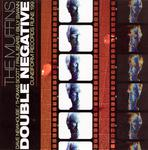

| Artist: | The Muffins |
| Title: | Double Negative |
| Label: | Cuneiform Records Rune 199 |
| Length(s): | 76 minutes |
| Year(s) of release: | 2004 |
| Month of review: | [07/2005] |
| 1) | The Highlands | 6.04 |
| 2) | Writing Blind | 5.54 |
| 3) | Choombachang | 2.45 |
| 4) | The Ugly Buttling | 3.39 |
| 5) | The Man In The Skin-Painted Suit | 2.44 |
| 6) | Childhood's End | 6.15 |
| 7) | Exquisite Corpse | 6.52 |
| 8) | They Come On Unknown Nights | 4.18 |
| 9) | Cat's Game | 3.51 |
| 10) | Stethorus Punctum | 4.01 |
| 11) | Dawning Star | 5.20 |
| 12) | 5:00 Shadow | 3.16 |
| 13) | Metropolis | 3.35 |
| 14) | Angel From Lebanon | 6.55 |
| 15) | Frozen Charlotte | 2.53 |
| 16) | Maya | 4.24 |
| 17) | The Two Georges | 5.19 |
Samples of Double Negative occur here by kind permission of Cuneiform Records.
Writing Blind opens with repetive runs of piano, a bit in comic style (you know, the overly hectic music that accompanies the average Tom & Jerry movie). But wait...hell burst loose in a crescendo of screamy saxes and the drummer doing pretty well what he likes, hacking away. At a third, the music takes a full stop, turn and takes off at a tangent. The pace stays, but the melodies and instruments are different. Quite hasty this. The closest I can think of coming are the rather hectic solo albums of David Jackson. And it has to said: The Muffins pack plenty of power.
Choombachang in its opening is rather straightforward jazzlike, while the theme is also well rather ordinary. I seem to have transported to New Orleans for the duration. A playful piece. The Ugly Buttling is back to the avant-garde, fortunately for some, unfortunate for others. I actually prefer the avant side of things, especially when they get rowdy. This time it is less power and more meander, with a bit of vibes thrown in. The horns do sound very ehm brassy, I am not sure what they do to them, but the sound gets scattered (or something). The conclusion becomes positively filmic with excellent melodic strings and keyboards. Very unexpected.
The Man In The Skin-Painted Suit reminds of VDGG again, this in fact happens quite a bit on this album. Slowly we plod on, until we get to Childhood's End. This is a rather mellow piece with offbeat rhythms, slowly progressing. The middle part is quite up-beat with sound in abundance. It seems they are preparing to move into a Latinamerican passage. The sax sound is shrill. However, the music turns instead for the soothingly melodic, again a bit of film music like (or Peer Gynt maybe).
Exquisite Corpse starts with a rock beat, and continues in Pink Panther style, in fact this is a variation, the original in all likelihood the corpse in question. A bit of French spoken word in the middle adds to the atmosphere. Then we move into pacey jazz style with free insertions by the sax. We end on a melodic note.
They Come On Unknown Nights opens with a string orchestra, while before we are halfway we end up in a dark alley, where the band plays a rather sinister beat. The closing section is my first casio style. Cat's Game combines rock and outburst on (many) saxes, resulting in something quite chaotic, but still it pleases me. The casio concerto continues at the end.
Stethorus Punctum has vocalizations played as an instrument via samples. But of course, you can't do that too long, so before you know it we are back into Pink Panther style. The title of Dawning Star brings what it promises, EMish and soothing, we are in for a bit of romance. For how long, you wonder? Well for the duration, just about, because it never gets any more hectic. A beat does set in though, but slowly. Hassell style again.
5:00 Shadow brings us back to jazz territory, not very exciting on the whole, although it does bring in that typically gravelly sound in again. Metropolis never seems to underway much, a bit too loose and jumbled. Angel From Lebanon on the other hand, opens with piano and flute (for a change). The theme is replayed by sax later on, and is a typical jazz melody. The sax switches to meander mode soon after, and the song doesn't recover. The organ is quite Canterbury here.
Frozen Charlotte opens with a tuneful piano. The song has that by now familiar 'scattered' (I guess in some way treated) sax sound. Maya is a slow plodding piece with the horns resorting somewhere in the back. A bit of a world music feel on this one, or maybe some ECM. There are keyboard a drippin', with the end result being quite relaxed and melodious. The Two Georges is quite different, opening with sampled voices played on a church organ of some kind. There is an air of religion about this one, that is until the ELPish keyboards set in. Very tuneful, and again quite relaxed. The middle part however goes Canterbury style of the more chaotic kind, we conclude with heavy percussion.